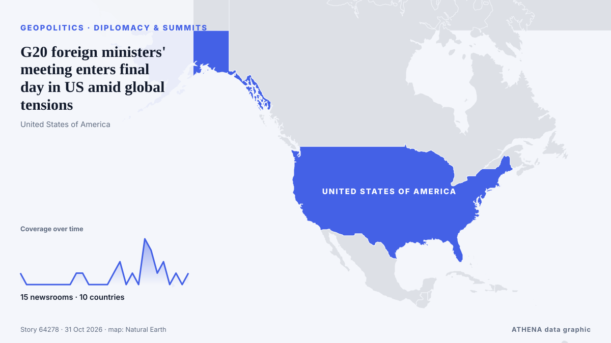

G20 foreign ministers' meeting enters final day in US amid global tensions

Secretary of State Marco Rubio hosting event in city of Atlanta. de Anadolu Agency (English)
Informado de forma independiente por 15 medios de 10 países desde el 29 oct; el primero fue The Hill; la cobertura va perdiendo fuerza. ATHENA califica el riesgo como moderado (3.0/10), sobre todo por la gravedad del daño descrito y su alcance geográfico y sectorial. La confianza es del 91 % (alta): lo corroboran 15 medios independientes, con una fiabilidad media de las fuentes del 77 %. Medios por país: Turquía (6), Estados Unidos (3), Corea del Sur (2). Cobertura: del 29 oct al 31 oct, 54 horas.
Por qué importa: Los hechos de seguridad y diplomacia pueden alterar alianzas, comercio y mercados mucho más allá de los países implicados.
Qué ha cambiado: 16 informaciones nuevas de 12 redacciones en las 24 horas hasta el 31 oct.
Primer titular: Top diplomats of Korea, Indonesia agree to strengthen strategic communication
Los titulares se muestran en inglés, tal como se publicaron.
De un vistazo
Seleccionado, puntuado y redactado por la metodología publicada de ATHENA. Ningún editor interviene en eventos concretos. Cómo se elabora ›
| 29 Oct 12:00 UTC | 1 |
|---|---|
| 29 Oct 14:00 UTC | 0 |
| 29 Oct 16:00 UTC | 0 |
| 29 Oct 18:00 UTC | 0 |
| 29 Oct 20:00 UTC | 0 |
| 29 Oct 22:00 UTC | 0 |
| 30 Oct 00:00 UTC | 0 |
| 30 Oct 02:00 UTC | 0 |
| 30 Oct 04:00 UTC | 0 |
| 30 Oct 06:00 UTC | 1 |
| 30 Oct 08:00 UTC | 1 |
| 30 Oct 10:00 UTC | 0 |
| 30 Oct 12:00 UTC | 0 |
| 30 Oct 14:00 UTC | 0 |
| 30 Oct 16:00 UTC | 0 |
| 30 Oct 18:00 UTC | 1 |
| 30 Oct 20:00 UTC | 2 |
| 30 Oct 22:00 UTC | 0 |
| 31 Oct 00:00 UTC | 1 |
| 31 Oct 02:00 UTC | 0 |
| 31 Oct 04:00 UTC | 4 |
| 31 Oct 06:00 UTC | 3 |
| 31 Oct 08:00 UTC | 1 |
| 31 Oct 10:00 UTC | 2 |
| 31 Oct 12:00 UTC | 0 |
| 31 Oct 14:00 UTC | 1 |
| 31 Oct 16:00 UTC | 0 |
| 31 Oct 18:00 UTC | 1 |
| 30 Oct 07:24 UTC | 0.0 |
|---|---|
| 30 Oct 21:07 UTC | 2.6 |
| 31 Oct 07:13 UTC | 1.5 |
| 31 Oct 10:07 UTC | 3.6 |
| 31 Oct 15:04 UTC | 5.1 |
| 31 Oct 15:13 UTC | 3.3 |
| 31 Oct 18:02 UTC | 3.0 |
Por qué estas cifras
Importancia
Riesgo
Confianza
La cobertura: quién informó y cuándo
titular tal como se publicó · abre el original- The Hill · Estados UnidosTrump's crony diplomacy is marginalizing Marco Rubio
- The Korea Times · Corea del SurTop diplomats of Korea, Indonesia agree to strengthen strategic communication
- Korea Herald · Corea del SurS. Korea, US, Japan foreign ministers to meet amid signs of strain in Seoul-Washington ties
- PBS NewsHour · Estados UnidosWATCH: Rubio welcomes G20 foreign ministers to Atlanta at 'critical moment'
- Anadolu Agency (English) · TurquíaRussian, Japanese foreign ministers meet in Atlanta to discuss bilateral ties
- Anadolu Agency (English) · TurquíaTurkish foreign minister, US secretary of state discuss Iran talks, Gaza, Ukraine war
- Anadolu Agency (English) · TurquíaTop US diplomat urges G20 members to focus on economic cooperation
- Times of India · IndiaJaishankar, Rubio review India-US bilateral cooperation during Atlanta meeting
- Business Recorder · PakistánRubio and Brazil foreign minister to meet after election tension, reports
- Anadolu Agency (English) · TurquíaUS, Japan, South Korea strengthen partnership, sign Arctic cooperation agreement
- Hindustan Times · IndiaJaishankar meets US Secretary of State Marco Rubio on sidelines of G20: 'Took stock of our bilateral cooperation’
- The Jerusalem Post · IsraelMarco Rubio, Brazil's foreign minister agree to meet after high election tensions - report
- Asharq Al-Awsat (English) · Arabia SaudíG20 Foreign Ministers to End Atlanta Meeting without Consensus on Key Issues
- Türkiye Today · TurquíaMissing G20 photo is the most honest picture of broken multilateralism
- France 24 English · FranciaRussia's presence divides G20 ministers
- Al-Monitor · Estados UnidosRubio hosts meeting of Indo-Pacific Quad, wraps up G20 gathering
- APA (English) · AzerbaiyánRubio to host meeting of Indo-Pacific Quad, wrap up G20 gathering
- Anadolu Agency (English) · TurquíaG20 foreign ministers' meeting enters final day in US amid global tensions
- Jamaica Observer · JamaicaRubio says US not directly involved in Flavio Bolsonaro’s flight from Brazil